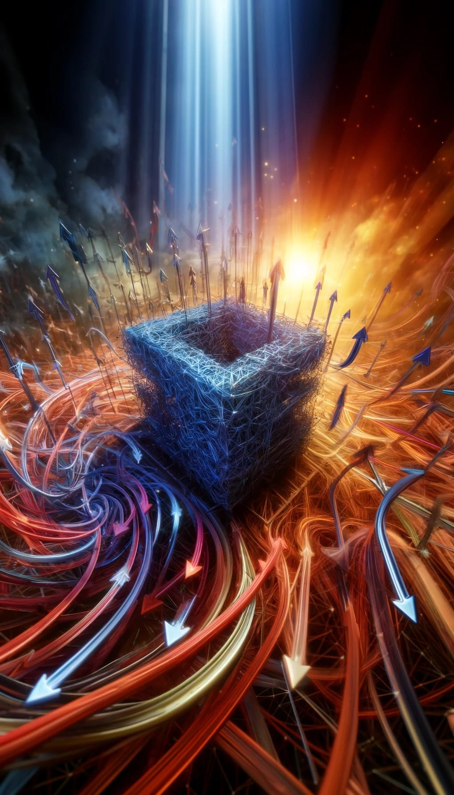

Theosis: Transcending Limitations through Code Christianity
Code Christianity, a synthesis of Christian wisdom and digital age insights, introduces Theosis as a path to transcend the limitations of our current understanding. By acknowledging the possibility of a simulated reality and developing new thinking frameworks, Theosis aims to expand consciousness and deepen our comprehension of existence itself.
The Idea in Plain Terms
A violinist who has practised for thirty years is doing something a beginner cannot do, and the difference is not that she knows more about violins. Her hands have been reshaped by the instrument. She hears intervals a beginner cannot hear. Her stock of facts is beside the point. What changed is the range of what she can perceive and execute, and no amount of reading would have produced it.
Theosis in the Christian tradition names a change of that kind, applied to a person's relation to God. Athanasius (318) put it in the form the tradition repeats: God became man so that man might become god. The claim was never about acquiring information. Lossky (1957) sets out the Eastern Orthodox formulation, which holds that a person may participate in God's energies, the way God acts and is present, while God's essence stays permanently beyond reach. Union is real and it is not comprehension.
Code Christianity carries theosis into a reality read as informational. The change it describes is of the same kind: the explorer becomes able to perceive structure that was always there and previously out of reach. Expanded consciousness and new frameworks are how a finite mind is remade for that, and what they aim at is participation rather than a finished account.
The Concept of Theosis in Code Christianity
Theosis, traditionally the process of becoming like God through participation rather than through knowledge (Athanasius 318; Lossky 1957), takes on a different sense in Code Christianity. Here it signifies getting past limitations imposed by a potentially simulated reality, which means expanding consciousness and building frameworks for reasoning about informational structures underlying experience. The transposition is deliberate and the tradition licenses it. What Lossky (1957) describes is participation in the energies while the essence stays permanently beyond reach: union that is real and comprehension that is never finished. Enlargement of what a person can perceive without a completed account is that structure, carried into a reality read as informational.
The Starting Point: Why There Is Something Rather Than Nothing
The question of why there is something rather than nothing is the foundation upon which Theosis is built. This question challenges our deepest assumptions about causality and existence, exposing the limits of conventional explanatory frameworks.
Universe 00110000
The Limits of Causal Reasoning
Our default mode of causal reasoning, where every effect must have a sufficient cause, falters when confronted with the totality of existence. Leibniz (1714) posed the question in its standard form and answered it by distinguishing two kinds of being: things whose existence has to be explained by something else, and a being whose existence is explained by its own nature. The move stops the regress by exempting one item from the rule that started it, which is either the discovery of a different kind of thing or an admission that the rule has a limit.
Even positing a prime mover leaves the question: why is there a creator rather than nothing at all? Rowe (1975) worked through this carefully and located the pressure point precisely. The cosmological argument needs the principle of sufficient reason, which says every fact has an explanation; the principle cannot be established without circularity, and it cannot be dropped without giving up the demand for explanation that made the question feel urgent. The regress is a symptom. The unprovable principle underneath it is the actual difficulty.
A New Paradigm
Our current modes of reasoning, deeply entrenched in linear causality and material reductionism, are ill-equipped to tackle the profundity of the question at hand. They inevitably lead us into infinite regresses and explanatory dead-ends, unable to account for the very fact of existence. These limitations reflect the constraints of a particular paradigm rather than a defect in reasoning as such. To truly advance in our understanding, we must be willing to question our most basic assumptions about the nature of reality and the role of consciousness in the universe.

Universe 00110000
Informational Ontology
A key element of this new framework is informational ontology, the proposal that reality may be fundamentally informational and structured by code-like rules. Bostrom (2003) gives the disciplined version of the simulation part: a trilemma about the fraction of observers who are simulated, with no accompanying claim about what any simulation contains or intends. Informational ontology does not answer the question of the previous section, and it is not meant to. A world made of information faces the same regress that a world made of matter does, which is why the change proposed here is in the questioner rather than in the inventory: what shifts is the range of structure a finite mind can participate in.
Consciousness Expansion
Another critical aspect of the framework is the expansion of consciousness. By exploring altered states of consciousness, we may develop new ways of perceiving and interpreting reality. Expanded consciousness could help us reason about informational structure beyond default perceptual habits.
Conclusion
Theosis in Code Christianity is a change in the one doing the asking. The question of why anything exists defeats causal explanation from the inside: Leibniz (1714) halted the regress by exempting one being from the rule that generated it, and Rowe (1975) showed that the principle of sufficient reason underneath can be neither proved nor given up. A question built that way is not answered by pushing harder inside the same frame.
The tradition the word comes from describes exactly this kind of change. Athanasius (318) put it as becoming what one was not, and Lossky (1957) sets out the Eastern account of participation, in which union is real and comprehension is never finished.
Code Christianity carries that into an informational reading of reality, where the rules are code-like and a mind can come to grasp them from inside. The practice is the point: expand what the questioner is able to perceive, and the question changes shape.
References
- Athanasius of Alexandria. On the Incarnation, § 54. Composed c. 318. Translated by John Behr, St Vladimir's Seminary Press.
- Bostrom, Nick. "Are We Living in a Computer Simulation?" The Philosophical Quarterly 53, no. 211, 2003, 243–255.
- Leibniz, Gottfried Wilhelm. "Principles of Nature and Grace, Founded on Reason." 1714. In Philosophical Essays, translated by Roger Ariew and Daniel Garber, Hackett, 1989, 206–213.
- Lossky, Vladimir. The Mystical Theology of the Eastern Church. James Clarke, 1957.
- Rowe, William L. The Cosmological Argument. Princeton University Press, 1975.